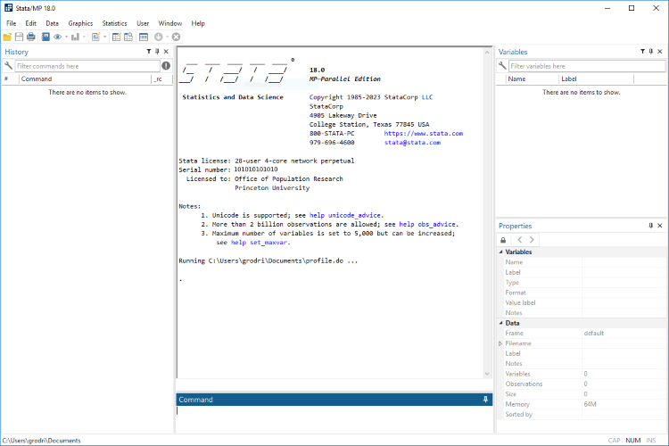
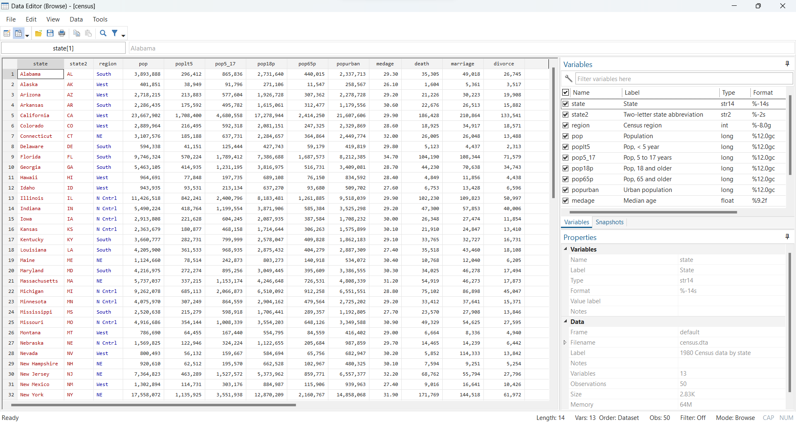

STATA Beginner's Tutorial: Your First Steps in Econometrics
Introduction
Welcome to your STATA tutorial! This guide is designed for students using STATA for the very first time in the "Introduction to Econometrics" course.
Important Note: You don't need to memorize anything in this tutorial. We follow a "Learning by doing" approach. The more training sessions you complete, the more you'll learn from understanding and fixing your mistakes.
What is STATA?
STATA is a powerful statistical software package that helps you understand, manage, and manipulate data.
Why STATA?
- Most widely used statistical tool in the economics community worldwide
- Always up-to-date with new econometric methods
- Easier to learn compared to programming languages like R or Python
STATA Interface Tour

Let's explore the main STATA window:
| Component | Purpose |
|---|---|
| Menu and Toolbar | Access commands via menus and shortcuts |
| Review/History Window | Shows all past commands (click to re-run) |
| Variables Window | Lists dataset variables with names and labels |
| Properties Window | Details about selected variables or dataset |
| Results Window | Displays output of commands and analyses |
| Command Window | Type commands directly for execution |
What is a Dataset?
A dataset is a structured collection of related data points - think of it as a super-organized spreadsheet designed for statistical analysis.
In Stata, a dataset is saved in stata format (with .dta extension), and it can only be opened in Stata.
Note: you can upload and export data in CSV, Excel and other format. To do this, you can use the menu toolbar: File→ Import and File→ Export. !
Essential STATA Workflow
You'll frequently use these three components:
1. Do File (.do file)
- A script file containing your STATA commands
- Why use it? Without a do file, you lose track of your code, making debugging and navigation difficult
- Golden Rule: Always write and run code through a do file!
2. Log File
- Records everything you do in STATA
- Essential for troubleshooting and keeping complete session records
- Nothing gets missed when you need to review your work
- Records everything you do in STATA, including your commands and results. The log file is saved in plain text format.
- Important: If you don’t open a log file at the beginning, none of your results will be saved. There’s no way to recover that output afterward.
3. Data Editor
- Built-in tool to view and edit data in tabular form
- Useful for visual data inspection and identifying issues
Typical Workflow:
- Open STATA
- Start a log file (new or resume existing)
- Open/create your do file
- Write and execute code
- Use Data Editor and other tools as needed
- Save do file(s)
- Close log file
- Close STATA
Understanding STATA Commands
STATA commands follow a consistent syntax pattern:
Command + Variable(s) + Options
Examples:
Example 1: Basic Summary
summarize wage
- Command:
summarize(provides summary statistics) - Variable:
wage - Options: None
Example 2: Scatter Plot with Title
scatter wage edu, title("Wage vs Education")
- Command:
scatter(creates scatterplot) - Variables:
wage(y-axis),edu(x-axis) - Option:
title(" ")(adds chart title)
Note on Variable Lists: You can often use multiple variables. For example: summarize wage edu age provides statistics for all three variables. We call wage edu age a varlist.
Your First Do File - Complete Walkthrough
⚠️ Critical First Step: File Paths
The file paths in this example are specific to the instructor's computer and WILL NOT WORK on your machine!
Before running anything, you must:
1. Change the paths to match folders on your computer, OR
2. Use the cd command (recommended):
cd "C:\Users\YourName\Documents\Econometrics"
Note! Mac Users should use "slashes" instead of backslashes in the cd command
Then use shorter paths like log using "log_session_1.log"
How to Run Code
- Method 1: Copy code to Command Window and press
Enter - Method 2: Use the Do-file Editor:
- Press
Ctrl+Dto run current line - Highlight code and press
Ctrl+Dto run selection - Click "Execute" button in toolbar
Code Walkthrough
1. Starting the Session
log using "E:\009 INTRODUCTION TO ECONOMETRICS (ET4) - a.a. 2024-25\STATA session 1-20250925\Log file\log_session_1_part1.log", replace
- Command:
log using - Purpose: Starts recording everything in Results Window to a file
- Option:
replaceoverwrites existing file with same name
clear all
- Command:
clear all - Purpose: Clears STATA's memory - removes any loaded data and resets environment. Perfect for starting fresh.
2. Loading Data
webuse census.dta, clear
- Command:
webuse - Purpose: Downloads example dataset from STATA's online repository
- Dataset:
census.dta - Option:
clearloads new dataset, dropping any current data
save "E:\009 INTRODUCTION TO ECONOMETRICS (ET4) - a.a. 2024-25\STATA session 1-20250925\Dataset\census.dta", replace
- Command:
save - Purpose: Saves dataset to your computer
- Option:
replaceoverwrites existing file
3. Initial Data Exploration
browse
- Command:
browse - Purpose: Opens Data Editor in view mode for visual data inspection
- Tip: Close after checking - don't make manual changes here
describe
- Command:
describe - Purpose: Shows variable names, storage types, formats, and labels
- Tip: Use
describe, shortfor condensed output
summarize
- Command:
summarize - Purpose: Provides count, mean, standard deviation, min, and max for numeric variables
- Enhanced:
summarize, detailgives medians, percentiles, skewness, kurtosis
Creating and Manipulating Variables
Generating New Variables
generate kids_total = poplt5 + pop5_17
- Command:
generate(orgen) - Purpose: Creates new variable
kids_totalas sum of two variables - Important: If any value is missing (
.), the result will be missing
generate has_kids = (kids_total > 0)
- Command:
generatewith logical expression - Purpose: Creates dummy variable
has_kids(1 if true, 0 if false)
Modifying Dataset Structure
drop medage
- Command:
drop - Purpose: Permanently removes variable from dataset
- Warning: Irreversible in current session! Save backup first if unsure.
rename (pop popurban) (population urban_population)
- Command:
rename - Purpose: Renames multiple variables at once
- Tip: Use descriptive but concise names
Advanced Variable Creation
gen pop_less17_more65 = poplt5 + pop5_17 + pop65p
- Purpose: Sums three age groups
- Alternative: Consider
egen rowtotal()if you want to treat missing values as zero
gen death_r = .
replace death_r = (death/population)*1000
- Pattern: Initialize as missing, then calculate
- Purpose: Creates death rate per 1,000 inhabitants
- One-line alternative:
gen death_r = (death/population)*1000
Creating Dummy Variables - Two Methods
* Method 1: Using replace with conditions
gen south = .
replace south = 1 if region == 3
replace south = 0 if region == 1 | region == 2 | region == 4
* Method 2: Using logical expression (Recommended)
gen south2 = (region == 3)
- Purpose: Both create a dummy variable for southern regions
- Preferred: Method 2 is more efficient - STATA automatically converts
trueto1andfalseto0
browse region south south2
- Purpose: Compare both methods visually to verify they produce identical results
Adding Labels for Clarity
Variable Labels
label variable death_r "death rate per 1,000 inhabitants"
- Command:
label variable - Purpose: Adds descriptive label that appears in output tables
- Best Practice: Always label your variables for readability
Value Labels
label define region 1 "North-East" 2 "North-Centre" 3 "South" 4 "West"
label values region region
- Command:
label define+label values - Purpose: Maps numeric codes to meaningful text labels
- Result:
tabulate regionwill show text instead of numbers
label define r_south 1 "1. South" 0 "0. NE, NC, W"
label values south r_south
- Purpose: Creates user-friendly labels for dummy variables
Data Inspection
codebook region
- Command:
codebook - Purpose: Provides detailed variable information - counts, percentages, missing values, labels
- Excellent for: Inspecting categorical and labeled variables
Saving and Closing
Save Your Work
save "E:\009 INTRODUCTION TO ECONOMETRICS (ET4) - a.a. 2024-25\STATA session 1-20250925\Dataset\census2025.dta", replace
- Command:
save - Purpose: Writes current dataset to disk
- Warning:
replaceoverwrites without confirmation! - Tip: Use versioned names like
census2025_v1.dtato keep backups
End Session Properly
log close
- Command:
log close - Purpose: Closes log file and ensures all content is saved to disk
- Important: Always close your log files!
💡 Pro-Tip: Comment Your Code!
Use comments to explain what your code does - this helps tremendously when you review your work later:
* This section creates demographic analysis variables
gen kids_total = poplt5 + pop5_17 // Total number of children
gen has_kids = (kids_total > 0) // Dummy variable: 1 if state has any kids
* Single-line comments can use * or //
* Multi-line comments use /* ... */
Next Steps
- Practice with the training sessions
- Experiment with modifying the code
- Make mistakes and learn from them
- Use the log files to track what went wrong
- Ask questions when you're stuck
Remember: Econometrics is learned by doing, not just by reading. Happy analyzing!